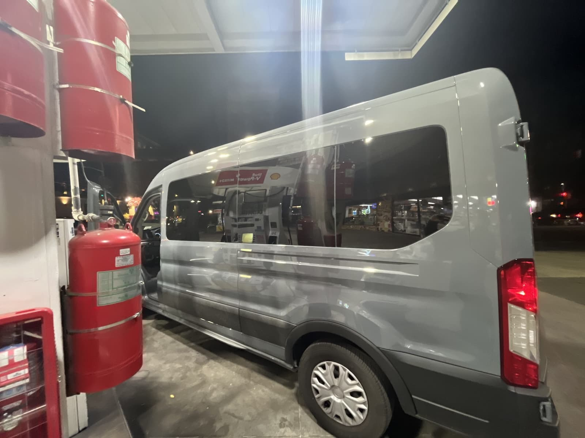
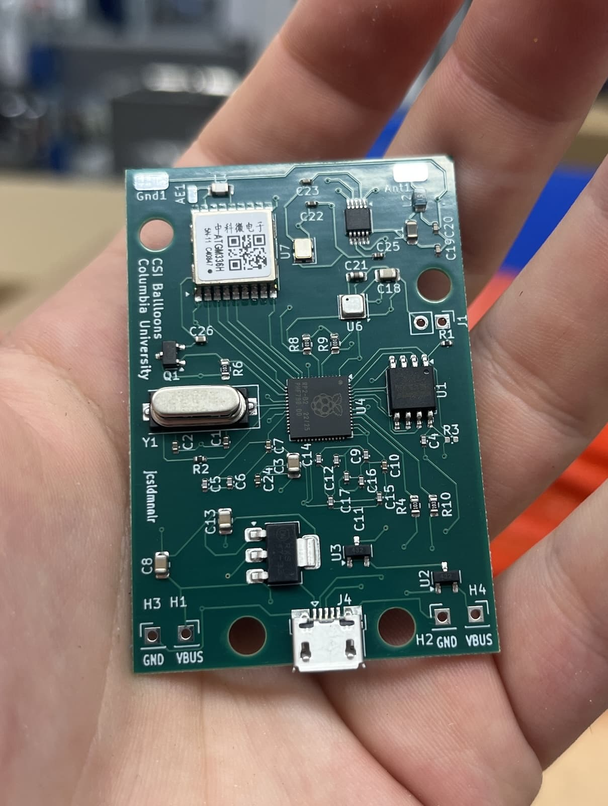

High-Altitude Balloons

I spent two years as the co-Mission Lead for the Columbia Space Initiative’s high-altitude balloons team. We design and launch high-altitude research devices. My co-lead and I restarted the team after it ceased in 2020 during COVID-19. It was an excellent experience where I learned a lot technically as well as how to be a leader. I stepped down as lead for my senior year to allow younger students to lead, in hopes of continuing the team after I graduate.
I’m very passionate about the project and wanted to display our work and successes on my website.
Key ideas: High-altitude balloon launches, logistics, team leadership, RF theory and practice, micrcontrollers, sensors, driving a van
Spring 2024 Launch
This was the team’s first launch since 2019. We lost most of our institutional knowledge, save for the documents left behind by previous members. We designed and built a fairly complex payload and launched on a large 1600g balloon.
Payload
The payload consisted of a GoPro, sensor stack on an Arduino Mega (VO2, humidity, temperature, UV, altitude/pressure), a custom built GPS tracker using APRS (Automatic Packet Reporting System), and a SPOT satellite GPS tracker. The sensor data would be logged to the SD card for later review. The payload was put inside of a styrofoam coooler and held with a reusable eharness we sewed together.
My primary focus was the APRS transmitter. Being on a tight budget, I came up with a design that used a Baofeng UV-5R HT (5W) from China and an Arduino Uno. I cut into the included microphone cable and hijacked the push-to-talk (PTT) and the microphone input to be able to transmit the FM-modulated AFSK at 144.390 MHz that APRS uses over the radio, activating PTT as-needed through a BJT transistor.
Launch
We launched the 1600g balloon about three hours upstate from New York City. It was a cold and windy day and our inexperienced team struggled to fill the balloon, mainly due to the heavy winds that made it difficult to keep straight up. We managed to fill the balloon, and tested our APRS GPS as well as the SPOT tracker.
We launched and immediately relized we were not receiving information from the SPOT GPS, were also not getting any data from the radio tracker. We drove the projected landing location but did not find the balloon. Our hope was that someone would find it in Eastern Connecticut and call us, and we could go pick it up.
That night, we realized that the two GPS trackers were most likely interferring with each other. The working theory was that when the AA battery pack ran out on the homebrew APRS tracker, we’d get pings from the SPOT.
And indeed, the next morning, the SPOT tracker sent the location of the balloon. Unfortunately, it was over the Atlantic ocean, around 30,000 feet and nearly 200 miles off the coast of Newfoundland. It turned out that we had underfilled the balloon by about one-fifth. That meant the balloon’s ascent was slower than intended, and the strong winds carried it eastward, off the coast of the continent.
The tracker continued to ping for about a half an hour until it sent its final message at 0 feet above sea level and then went silent.
Fall 2024 Launch
For our launch the following semester we decided to go for a simpler payload and focus on getting some good footage. We built a simple payload with a triangle of wood, carrying an Insta360 X3, SPOT tracker, and Anker battery pack. We did a better job filling the balloon, launching from Delhi, New York. The winds were very favorable and carried the balloon southwards towards Stamford, CT. The balloon landed around 5p.m. in the very tall tree of a couple in Stamford. Our fortunate was one in a million — the owners of the property were in the land management and tree trimming business, and after the initial scare of two kids showing up at their doorstep at nightfall, they promised they would do their best to get it down. In January, they managed to cut down the branch and mailed us the payload.

Unfortunately, the launch was not perfect — we only got the first half hour of the 2.5 hour flight. The footage is beautiful nonetheless. Check out this video of our launch produced by one of our team members, Claudio.

Pico Balloons
After our Fall 2024 launch, I decided to refocus our team’s efforts on a new project that was less logistically challenging. We are in the process of building Pico Balloons, ultra-light boards that get launched on non-expanding mylar balloons, rise to around 40,000 feet and then (ideally) circumnavigate the globe.
The boards use the RP2040 microcontroller and an Si5351A clock generator with a TCXO crystal oscillator to transmit WSPR on the 17-meter band (~18 MHz). The idea is to send our position with WSPR along with a tiny bit of environmental data from a Bosch combo temperature/humidity/pressure sensor.
